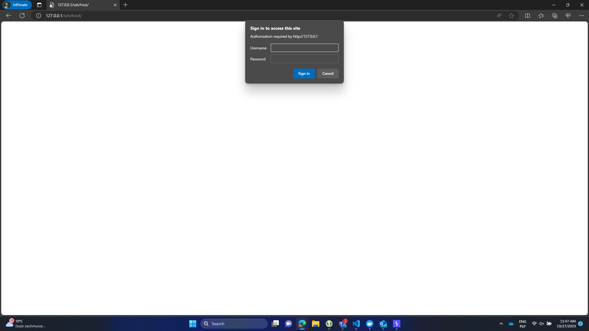
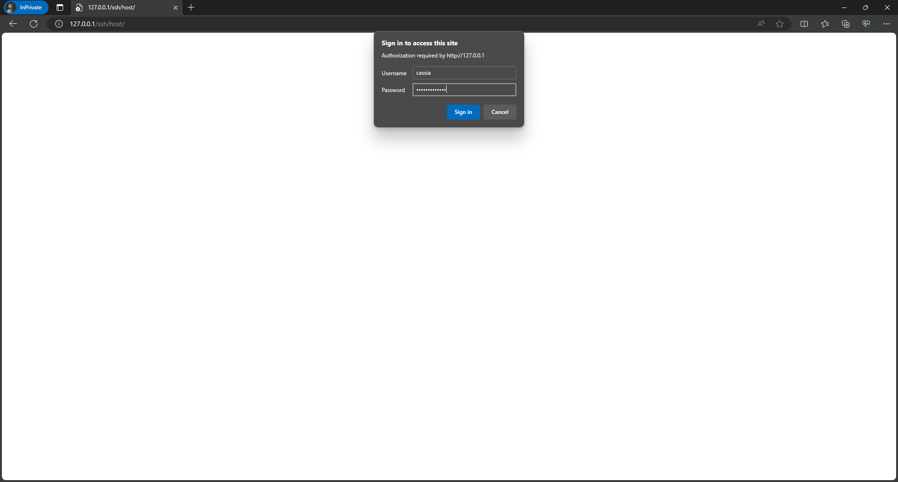
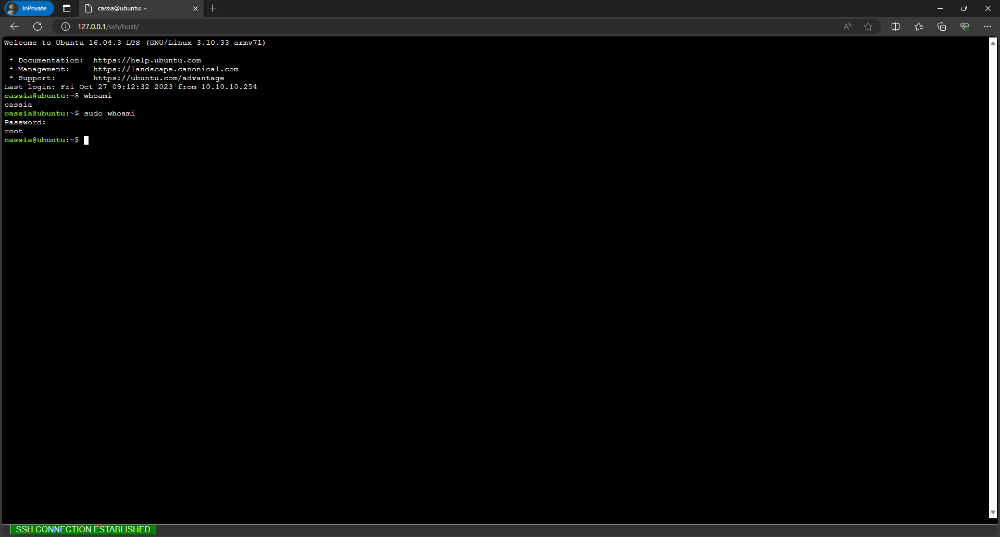

Common Vulnerabilities and Exposures
CVE MITRE:
CVE-2023-35794
____ _ _ _ _
/ ___|_ _(_)_ __ _ _| | | | __ _ ___| | __
\___ \ \ /\ / / | '__| | | | |_| |/ _` |/ __| |/ /
___) \ V V /| | | | |_| | _ | (_| | (__| <
|____/ \_/\_/ |_|_| \__,_|_| |_|\__,_|\___|_|\_\
Repository contains description for CVE-2023-35794 discovered by Dodge Industrial Team for Dodge OPTIFY platfrom.
CVE ID: CVE-2023-35794
Vendor: Cassia Networks
Product: Access Controller
Version: Cassia-AC-2.1.1.2303271039
Vulnerability: Incorrect Access Control
Affected: web ssh, gateways
Decription: WebSSH session can be hijacked
Status: Confirmed by vendor, Fixed
Version Patched: Cassia-AC-2.1.1.2308181707
Cassia uses WebSSH2 by billchurch to initiate SSH sessions from AC to Gateways.
WebSSH2 Is a web SSH Client which uses ssh2, socket.io, xterm.js, and express.
A bare bones example of an HTML5 web-based terminal emulator and SSH client.
It uses SSH2 as a client on a host to proxy a Websocket/Socket.io connection to a SSH2 server.
When a session of WebSSH is established with Gateway Device any external user can hijack it without any authentication and authorization.
Session establishment is done via GET request to proper
/ap/remote/<mac>?ssh_port=<ac-rev-ssh-port>
Gateway then receiving request through MQTT (or CAPWAP) channel/ssh/host but the session cookie is not validated. cassia:cassia-<last-mac-6-digits>).
An attacker may use CVE-2023-35793 to trick any athenticated user
to initiate a session to any device connected to the AC (note that the user does not need to login into the gateway,
the session itself will be initiated with only exploiting CVE-2023-35793 CSRF). Then using this vulnerability and knowing the MAC address
an attacker may easily obtain access to the device through WebSSH.
Lets assume an attacker triggered someone and the session is established to the gateway where the default credentials are used.
1) Attacker just opens the web browser and enters default credentials for known device.

2) Attacker knowing which device were triggered provides default credentials (commonly these are not being changed)

3) Attacker is authenticated to device LXC container as a user which has root rights by default
